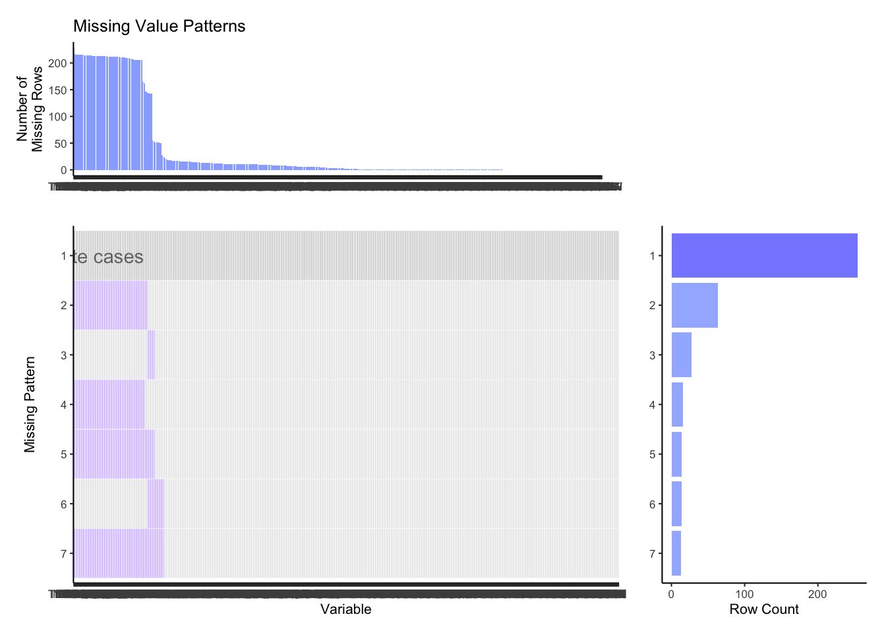
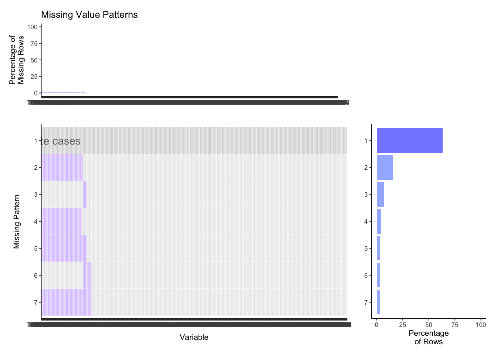
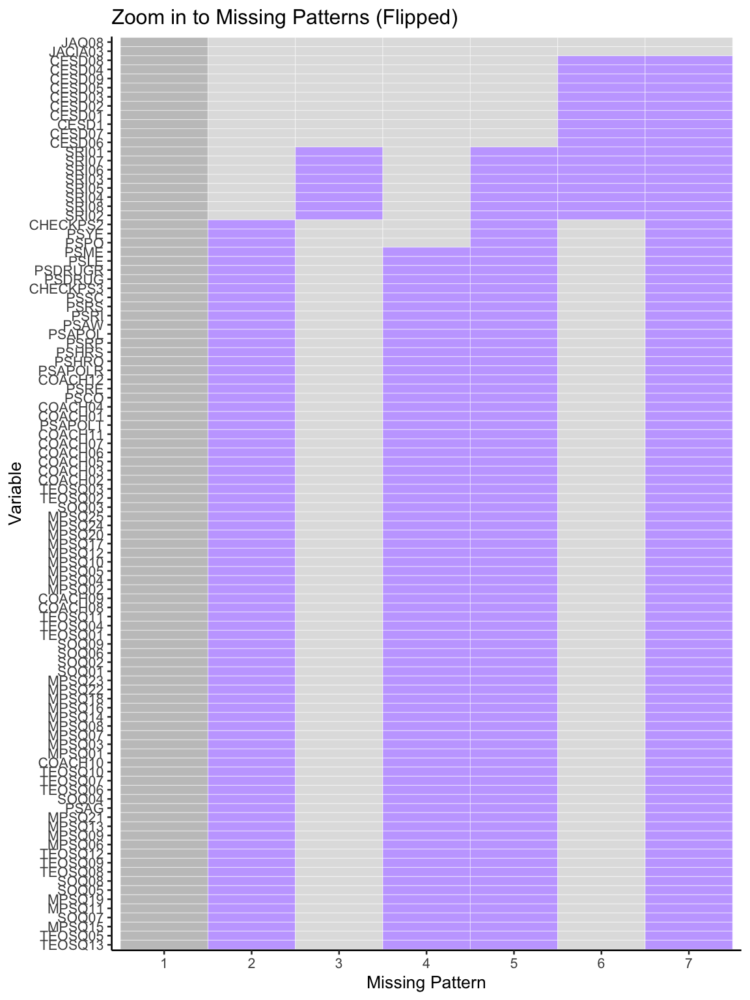

Chapter 4 Missing values
4.1 Defining a Function to Plot Missing Value Patterns: miss_pat()
This function allows us to determine which subsets of values are missing among different obervations in our data, organizing them by how commonly the missing pattern occurs.
miss_pat takes in two values,
data: the dataframe of interest andstyle: specifying ‘count’ or ‘percent’ as the style of graph you are interested in displaying.
4.2 Visualizing Missing Patterns
Since our data set is so large with many combinations of variables that may be missing, we only considered missing patterns that occured at least five times throughout the observations. Also, note that the text in the top row indicates that that pattern corresponds to “complete cases” with no values missing.

4.2.1 Observations
The most common pattern is of complete cases; about 65% of rows contain no missing values. This is encouraging for our analysis.
For patterns 2, 4, 5 & 7 - the pattern is fairly similar across and spans seemingly similar sets of variables.
Patterns 3 & 6 are also similar in the types of missing data.
The variable names are unreadable here, but the purpose of this plot is mainly to indicate where in our data set the missing values are commonly found; the next plots show which variables tend to be missing in more detail.
4.3 A Deeper Look into the Missing Data

To take a deeper look into the data that is missing, we took a look directly at the ‘missing’ areas that were shown above. For the purposes of analysis we also flipped the chart in order to better read the column headers that constitute these missing data patterns. Note that the chart now increases in frequency of ‘missing’ from left to right on the x-axis per pattern.
4.3.1 Observations:
Based on inspection, we can see that the common questions of the questionnaire that have missing values are those in the following categories:
MPSQ: Reasons for Participation in Sport
CESD: Mental Health Assessment Section
SRI: Sexual Activity Questions
The two variables that are missing across 4 patterns each are:
SRI02 - LAST TIME HAD SEX: USED OTHER BIRTH CONTROL
PSME - RECEIVED MEDIA ATTENTION
For patterns 3 and 6 the common areas of missing variables are from:
CESD: the Mental Health Assessment section
SRI: the Sexual Activity Section
The variable missing most often is TEOSQ13.
4.3.1.1 Discussion
It is understandable that some college students would prefer not to disclose their sexual behavior, so this pattern of missing values seems non-random.
Mental health likewise is topic that is often glossed over, and given the survey was conducted in 2006 mental health was an even less discussed topic than it is today, it is not surprising that some of these questions were left unanswered by students.
The MSPQ variables are part of the following question: “People have many different reasons for participating in sports. Below are listed some of those possible reasons. How important is each of these reasons for you?” and each variable accounts for a different answer to the question which the student could answer on a score from 1 to 5. A missing variable indicates that they did not answer the question at all. This could be because they do not participate in sports.
Variable TEOSQ13 is a question within the “Feelings about Athletic Success” section where the question was: “People have different ideas about what athletic”success" means, other than simply winning or losing a competition. Think about the times when you have felt most successful in sport. How well does each of the following statements describe your feelings? I feel most successful in sport when . . . I do my very best." There were 13 variations on this question that provided different answers to select from in the questionnaire and all 13 of the TEOSQ variables show up in the missing values top list. Similar to the MSPQ variables, the responses to the question was a score between 1 to 5. We believe that missing values to this question are also due to students who did not participate in sports.